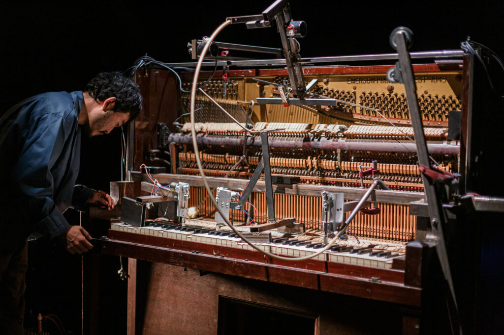
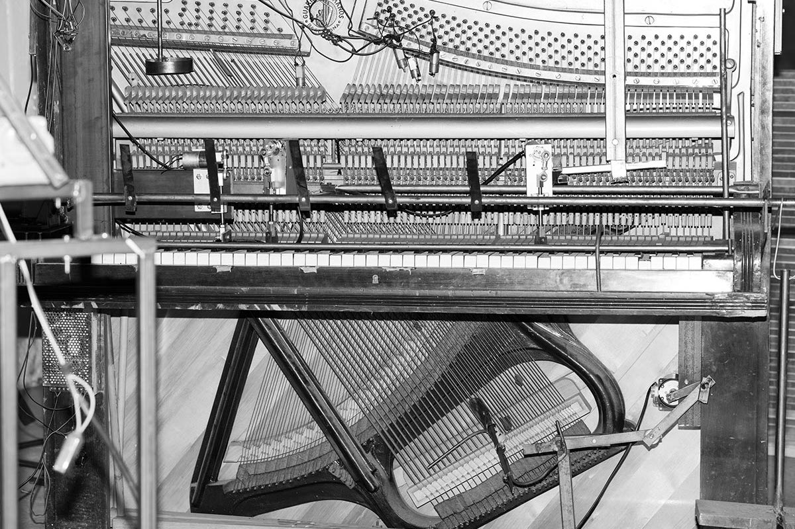
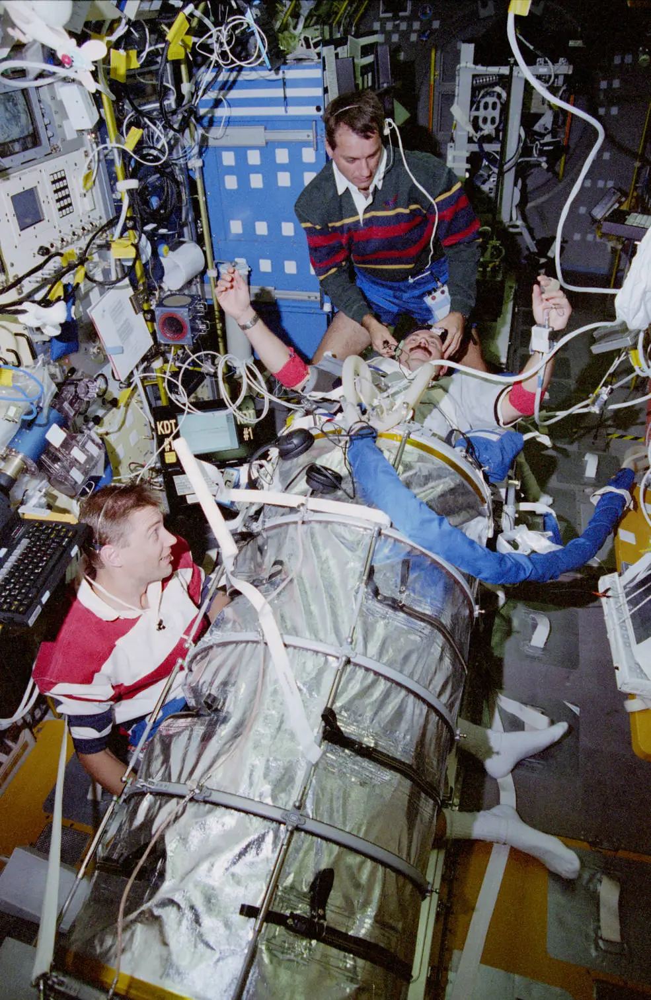
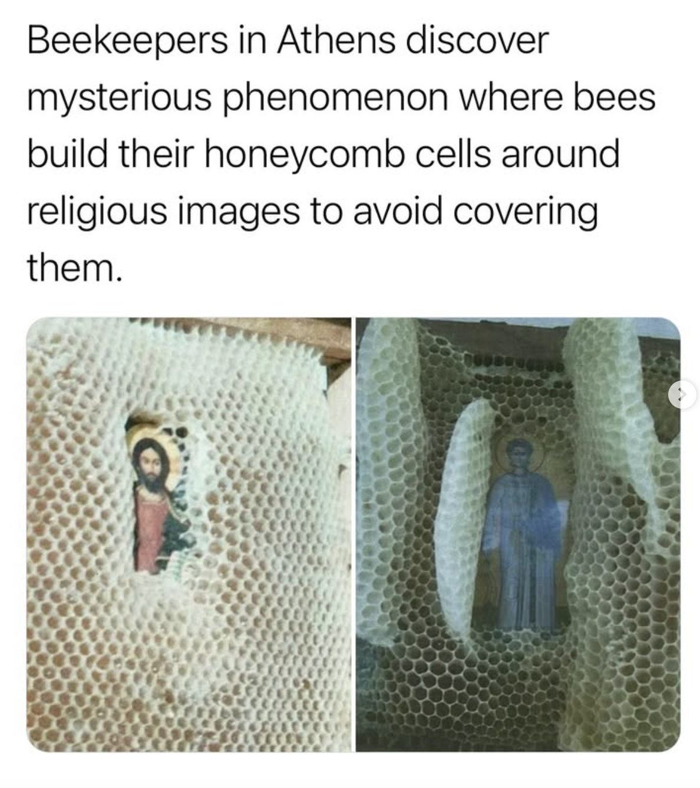
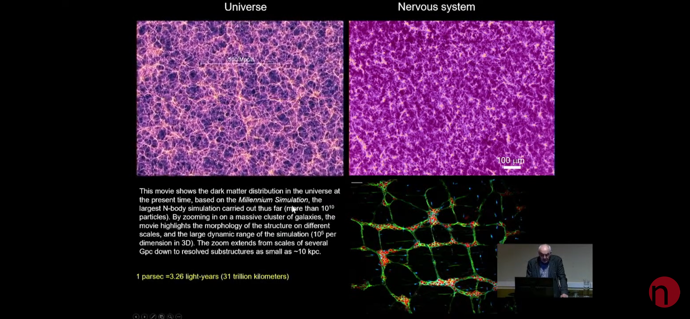
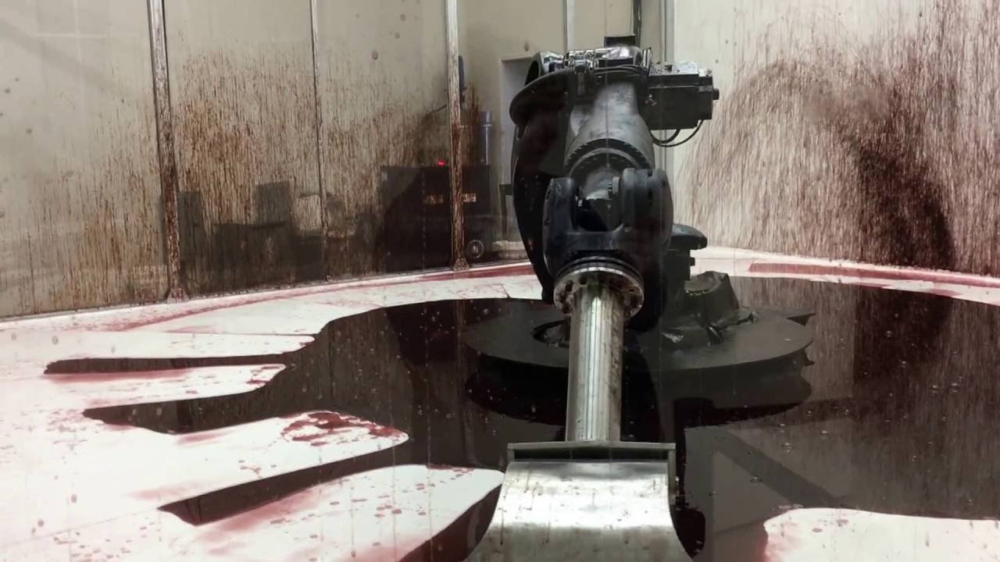
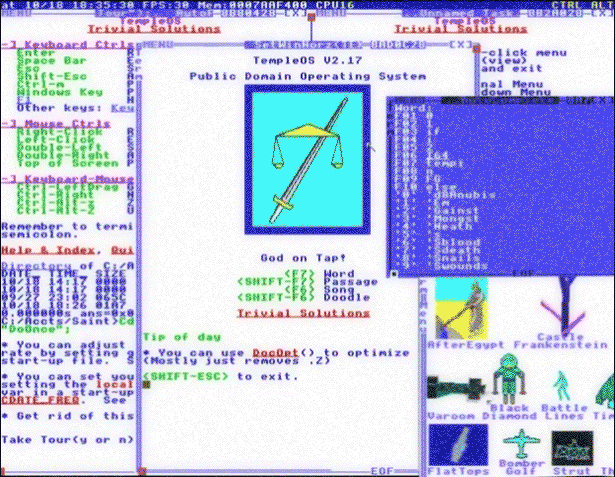
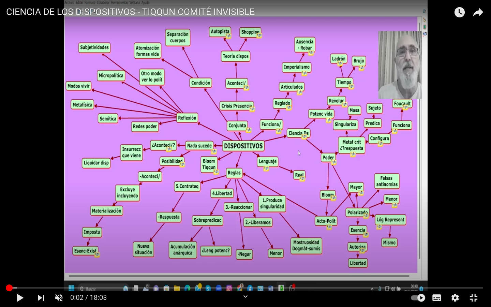
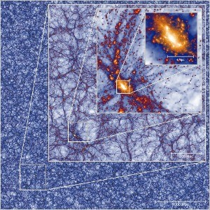

echo chamber
This is a digital arena for sound and vision. Every echo is a decision. Step inside, hear the feedback, feel the signal.
this code is a mess, this archive is a mess.
lolo&sosaku
 
in space we believe

Praat Software.
Click herePeter Ablinger
Cantos A La Virgen aspe Miradla
bees

Cosmological simulation of universe evolution
el jardín de la neurología.
Javier de Felipee

can't help myself. Sung Yuan Peng Yu

The Cosmic Clock.
manuscript from thee Benedictine Abbey of saint-Beertin

TemploOS.
Terry Davis

caribe mix
 